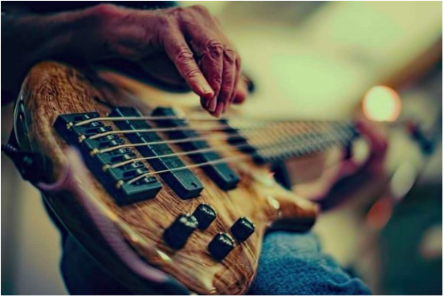

Thiago Aparecido Cordeiro dos santos
Idade: 34
Cidade: Porecatu/PR
Estado Civil: Casado
Um pouco sobre mim:
Sou casado com a Dayane, pai de dois filhos, Lívia e Lucas, nas horas
vagas gosto de tocar contra baixo, ir a igreja a qual congrego e ficar com minha Família.